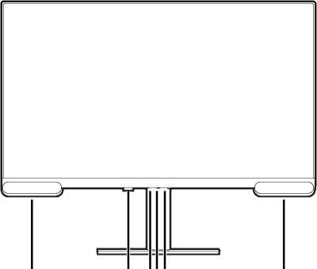
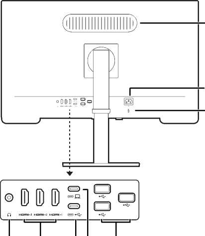
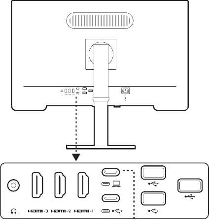
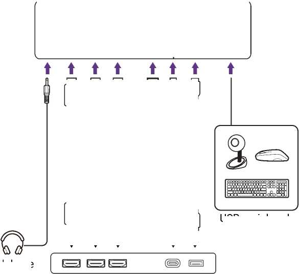
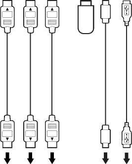
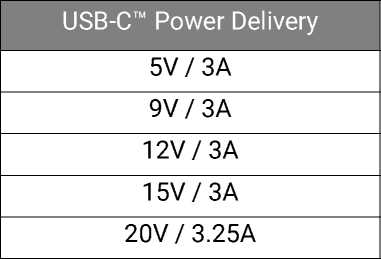
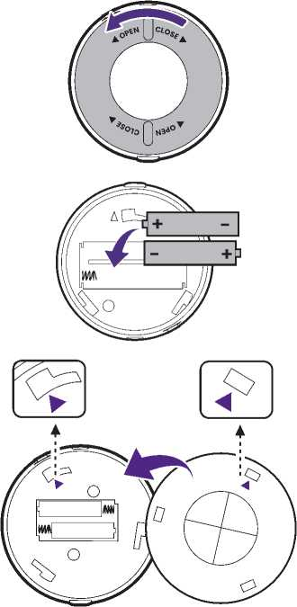
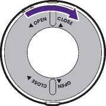

Getting to know your monitor
Front view

- Speakers
- IR receiver (for Hotkey Puck G3)
- Function key
- 5-way controller
- Power indicator / power button
Back view

- Headphone jack
- HDMI port x 3
- USB-C™ port (downstream; connecting to USB devices, with 1.5A power supply)
- USB-C™ port (upstream; for video, data transmission and power delivery up to 65W)
- USB port x 3 (downstream; connecting to USB devices, with 1.5A power supply)
- Kensington lock slot
- AC power input jack
- Woofer
- The USB data transmission speed varies according to your selection in USB-C Configuration on page 57.
- Picture may differ from product supplied for your region.
- (Applicable for products with white case) The case of the product may turn yellow in about 3 years due to the photo-oxidation reactions induced by light. This is a normal phenomenon and should not be considered as manufacturing defect.
Connections
The following connection illustrations are for your reference only. For cables that are not supplied with your product, you can purchase them separately.
For detailed connection methods, see page 24 - 25.


Headphone

USB peripherals
PC / Notebook
Power delivery of USB-C™ ports on your monitor
With the power delivery function, your monitor helps supply power to the connected USB-C™ devices. Available power varies by port. Make sure the devices are connected to the appropriate ports to be activated properly with sufficient power.

- A connected device needs to be equipped with a USB-C™ connector that supports charging function via USB power delivery.
- The connected device can be charged via USB-C™ port even when the monitor is in power saving mode.(*)
- The USB power delivery is up to 65W. If the connected device requires more than the delivered power for operation or for boot up (when the battery is drained), use the original power adapter that came with the device.
- The information is based on the standard testing criteria and is provided for reference. The compatibility is not guaranteed as the user environments vary. If a separately purchased USB-C™ cable is used, make sure the cable is certified by USB-IF and is full-featured, with power delivery and video / audio / data transfer functions.
- *: Charging via USB-C™ in monitor power saving mode is available when the Standby Charging function is enabled. Go to and select ON.
Installing the batteries to Hotkey Puck G3
- Applicable for models with Hotkey Puck G3.
- Battery availability may vary by region. Purchase batteries separately if they are not supplied.
- Check Battery safety notice (applicable if a remote control is provided) whether the batteries are supplied with the product or purchased separately.
- Turn the battery cover counterclockwise to remove the battery cover.
- Insert two AAA Zinc-Carbon batteries onto the battery holder properly.
-
Put the battery cover back. Make sure the arrows inside the cover
and on the Hotkey Puck G3 are aligned. Turn the battery cover
clockwise until you cannot go further.


- Keep the batteries out of reach of children.
- If the Hotkey Puck G3 will not be used for an extended period of time, remove the batteries.